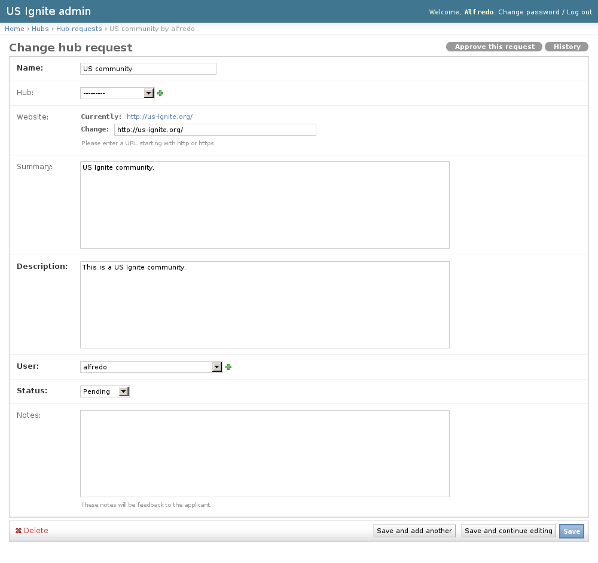
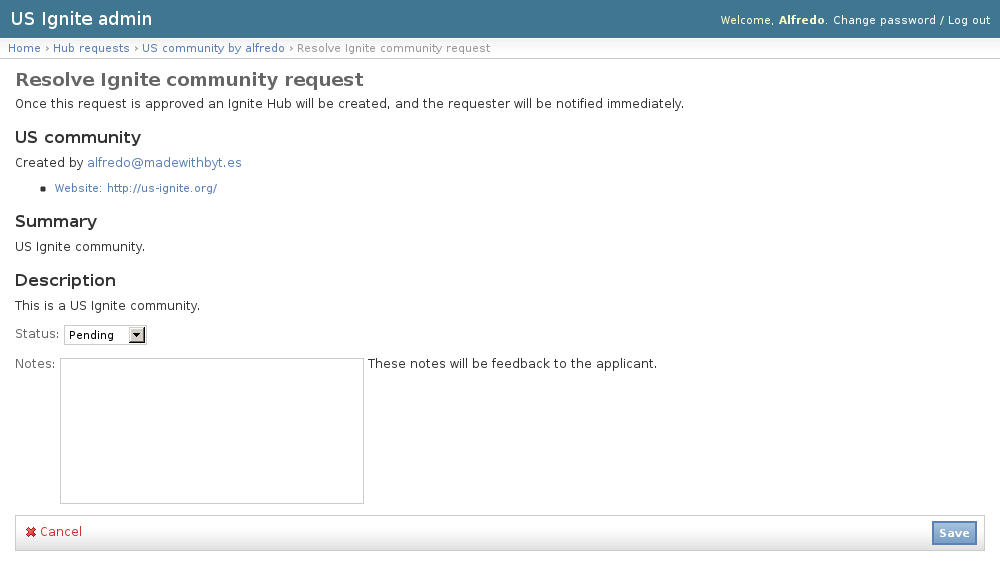

This section list the hubs section and its usage in the site.
Users can apply to be the managers of an Ignite Community, these requests are listed in this section.
The existing Hub Requests can be listed in the /admin/hubs/hubrequest/ URL. From this section the details of these Hub Requests can be inspected.
And the following actions can be performed:
Community requests must be only added from the front end of the application.
Community requests will be notified via email. and these can be managed in the detail page of the request.
The detail page of the notifications can be accessed in the /admin/hubs/hubrequest/ URL.
On the detail page of the request there is a link on the top right-hand corner that says “Approve this request”.
From here the community request can be approved or rejected.
Once approved the communities are ready for the users to complete the Community profile and then publish it. If the community is not published it won’t be available anywhere in the site.
The existing Communities can be listed in the /admin/hubs/hub/ URL. From this section the details of these Hubs can be inspected.
And the following actions can be performed:
Adding new Communities can be done as well from the admin section available in the /admin/hubs/hub/add/ URL.
The following fields are available to create Communities:
In case Communities needs unpublishing it can be done from the detail admin view by changing the status of the Community to draft or removed
Note
The Hubs can be browsed in the /admin/hubs/hub/ URL.
{kind=link}
{kind=link}
{kind=link}
{kind=link}
{kind=link}